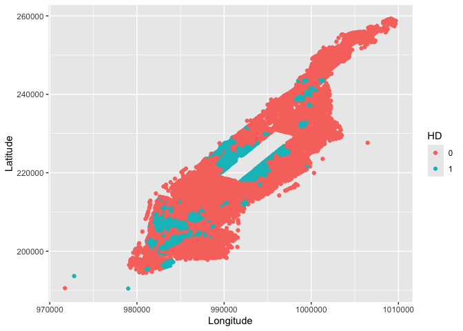
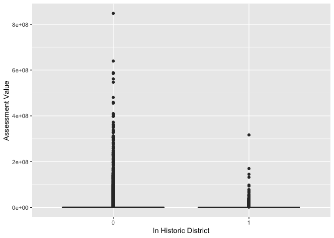

Hypothesis Testing
GEO 200CN - Quantitative Geography
Professor Noli Brazil
April 13, 2022
In this lab guide, we’ll make statistical inferences about the significance of particular data values within a hypothesis testing framework. We will follow the material presented in this week’s lecture and handout.
The objectives of the guide are as follows
- Make inferences about the mean of one group
- Make inferences about mean comparisons between two groups
We’ll use two data sets in this guide. The first contains current and forecasted climate values in Oregon. The second contains property values for buildings in Manhattan, New York City.
Loading packages
We’ll be using one package in this lab - tidyverse. Load it in using library().
library(tidyverse)Dependent samples
Dependent sample hypothesis tests - also known as one-sample tests - typically examine differences in the mean over time for the same sample. Let’s bring in a data set that contains climate values (January and July temperature and precipitation) simulated by a regional climate model for present, and for potential future conditions when the concentration of carbon dioxide in the atmosphere has doubled, for a set of model grid points that cover Oregon. The variables named TJan1x, TJul1x, PJan1x and PJul1x are the simulated present values of temperature (T) and precipitation (P), while the variables with 2x in their names are those for the doubled CO2 (carbon dioxide) scenarios that are intended to describe the climate of the next century. Read in the data set directly using read_csv()
orsim <- read_csv("https://raw.githubusercontent.com/geo200cn/data/master/orsim.csv")The data is also located on Canvas in the Lab and Assignments Week 3 folder.
The research question is: How would a doubling of carbon dioxide in the atmosphere affect temperature over Oregon? From what we already know about the greenhouse effect, atmospheric change, and basic climatology, we can suspect that the temperatures will increase with an increase in carbon dioxide. The question is, are the simulated temperatures for the enhanced greenhouse-situation significantly higher than those for present?
Before running any tests, let’s just look at the distribution of our two variables TJan2x and TJan1x. First, the mean difference.
mean(orsim$TJan2x) - mean(orsim$TJan1x)## [1] 4.089474Then histograms of each variable.
ggplot(orsim) +
geom_histogram(mapping = aes(x=TJan1x))
ggplot(orsim) +
geom_histogram(mapping = aes(x=TJan2x))
Remember what CLT says?
Let’s do a side-by-side comparison using a boxplot using the function boxplot(). Do the groups visually differ?
boxplot(orsim$TJan1x, orsim$TJan2x)
Descriptively, it looks like an increase in the mean temperature from present to future. But, let’s formally test it since we now have the tools to do so. Remember the steps in hypothesis testing outlined in lecture and the handout.
The null hypothesis is that there is no change or a decrease in temperature. The alternative hypothesis is that there is an increase in temperature.
We should not be fixated too much with threshold cutoffs, but the standard α is 0.05.
We’ll use the standard t statistic, which will allow us to conduct a t-test.
We’re computing a difference of means for paired observations, so this is a one-sample hypothesis test.
First, let’s calculate the difference between TJan2x and TJan1x and save it back in our data frame.
orsim <- orsim %>%
mutate(diff = TJan2x - TJan1x)Next, we calculate the standard error s. The function length() gives you the total number of observations in the dataset.
n <- length(orsim$diff)
s <- sqrt(var(orsim$diff)) #formula from page 374Next, the t statistic
t1 = mean(orsim$diff)/(s/sqrt(n)) #formula on page 386
t1## [1] 192.6058pt().pt(t1, n-1, lower=FALSE)## [1] 2.141518e-144There is actually a canned function, t.test(), that you can use to run the t-test.
t.test(orsim$TJan2x, orsim$TJan1x, paired = TRUE, alternative="greater", conf.level =.95)##
## Paired t-test
##
## data: orsim$TJan2x and orsim$TJan1x
## t = 192.61, df = 113, p-value < 2.2e-16
## alternative hypothesis: true difference in means is greater than 0
## 95 percent confidence interval:
## 4.054261 Inf
## sample estimates:
## mean of the differences
## 4.089474similarly because this is basically a one-sample test
t.test(orsim$diff, mu = 0, alternative="greater", conf.level =.95)##
## One Sample t-test
##
## data: orsim$diff
## t = 192.61, df = 113, p-value < 2.2e-16
## alternative hypothesis: true mean is greater than 0
## 95 percent confidence interval:
## 4.054261 Inf
## sample estimates:
## mean of x
## 4.089474Let’s have you complete this step.
Question 1: What is your conclusion regarding the difference between the present and simulated future January mean temperature over Oregon?
Question 2: How would you change the null and alternative hypotheses to make this a two-sided test? What is the p-value of this two-sided test?
Question 3: For January precipitation (PJan1x and PJan2x) test the hypothesis that PJan1x is less than PJan2x. Use a t-test with a 5% or 95% significance level. State the null and alternative hypotheses. Interpret your results.
Independent samples
To demonstrate independent samples or two-sample hypothesis testing, let’s bring in the data set manhattan_buildings.csv, which includes information about every building in Manhattan, over 40,000 buildings (wow!). Read in the data set directly using read_csv()
MN<-read_csv("https://raw.githubusercontent.com/geo200cn/data/master/manhattan_buildings.csv")I’ve also uploaded this data on Canvas in the Week 3 Assignments and Lab folder.
In the next lab you will start exploring spatial data in R. Although MN is not spatialized, it does have spatial information, longitude and latitude, which allows us to crudely plot it using our friend ggplot().
##Map all of the buildings in Manhattan
ggplot(MN) +
geom_point(mapping = aes(x = XCoord,
y = YCoord)) +
xlab("Longitude") +
ylab("Latitude")The research question is: Are property values higher for buildings located in historic districts? Historic neighborhoods are areas where the buildings have historical importance not because of their individual significance but because as a collection they represent the architectural sensibilities of a particular time period. They have tremendous historical and architectural value. But do they also carry greater financial value?
Before answering this question, we need to be able to identify buildings in historic districts. It looks like the variable HD gives us which district a building is located in
summary(MN$HD)## Min. 1st Qu. Median Mean 3rd Qu. Max.
## 0.0000 0.0000 0.0000 0.2531 1.0000 1.0000A variable that is coded 0,1 to refer to absence or presence, respectively, is sometimes called a dummy variable or an indicator variable. Although a dummy looks like a numeric, it is in fact a qualitative or categorical variable. Since HD captures whether a building is in or out of a historic district, we should tell R that the numbers in the column are a code for historic districts, and we do this by creating a factor, or categorical variable, using as.factor(). A factor is a nominal (categorical) variable with a set of known possible values called levels.
MN <- MN %>%
mutate(HD = as.factor(HD)) Now we can draw a very crude map of buildings in historic districts.
ggplot(MN) +
geom_point(mapping = aes(x = XCoord,
y = YCoord, col = HD)) +
xlab("Longitude") +
ylab("Latitude")
Finally, split the “MN” object into two tables, one for the historic buildings (inHD) and one for the buildings outside a historic district (outHD). We want to compare the mean property values for each these groups.
inHD <- MN %>%
filter(HD == 1)
outHD <- MN %>%
filter(HD == 0)Our goal is to explore the effect of historic districts on property values in Manhattan. We want to find out if the designation of historic district has any effect on building property values. First, let’s create boxplots of property values to see if there is a visual difference between the two groups.
ggplot(MN) +
geom_boxplot(mapping = aes(x = HD, y=AssessTot)) +
ylab("Assessment Value") +
xlab("In Historic District") 
Next, we’ll use the function t.test() to run the hypothesis test. In this case, x = is the data being tested, y = is the comparison group (used for a two sample test).
Question 4: Run the appropriate t-test using a 5% (or 95%) significance level to compare the mean property values of buildings in historic districts and those not in historic districts based on the research question. State the null and alternative hypotheses. Briefly summarize your results.
Location is an important component of a property’s value. To test the impact of a historic district designation we should revise our test to examine only buildings that have similar locations. One way to do this is to identify buildings that are close to but outside of historic districts. Each building in the database has a block number. Let’s revise our dataset so that it only includes buildings which are on the same block as a historic district but outside of the district boundaries.
##Select buildings on the same block as a historic district
##Get a list of all blocks that contain historic buildings
blocks <- inHD$Block
#display the first 5 rows of blocks
head(blocks)## [1] 7 72 73 29 7 29##Select all buildings (from MN) that are on the same block as historic buildings
##The line below selects all rows where the block column contains values in our list of blocks
##Save the result as a new object
HDB <- MN %>%
filter(Block %in% blocks)
HDB_out <- HDB %>%
filter(HD == 0)
HDB_in <- HDB %>%
filter(HD == 1)Now we have two files that contain buildings on blocks with historic districts, one file describes buildings in the district and the other describes those outside the district boundaries. But, we need one more correction: size. The size of the building is an important determinant of its value. The variable AssessSqFt is the assessed value per square foot. We want to run a t-test to compare the mean property values per square footage of buildings in historic districts and those not in historic districts (for those in the same blocks).
Question 5: Based on our research question, run the appropriate t-test (using a 5% or 95% significance level) to compare the mean property values per square footage of buildings in historic districts and those not in historic districts. State the null and alternative hypotheses. Summarize your results.
Question 6: Calculate the effect size r. Does it represent a substantial effect?

This work is licensed under a Creative Commons Attribution-NonCommercial 4.0 International License.
Website created and maintained by Noli Brazil